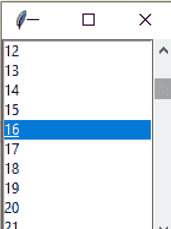
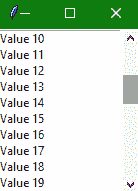

Tkinter Scrollbar小部件
在本教程中，我们将介绍 Python 中的 Tkinter Scrollbar 小部件，使用它我们可以在我们的 Tkinter 应用的用户界面中添加一个滚动条。
要在 Python 桌面应用中向上或向下或向右或向左滚动内容，需要使用 Tkinter 滚动条小部件。
要滚动列表框、画布等其他小部件的内容，我们使用这个小部件。
水平和垂直滚动条都可以在饰品输入小部件中创建。
下面我们有一张图片，显示了与列表框一起使用的滚动条小部件:

Tkinter scrollbar widget
滚动条部件的语法如下所示:
W = Scrollbar(master, options)
在上面的语法中，master参数表示父窗口。您可以使用许多选项来配置滚动条部件，这些选项被写成逗号分隔的键值对。
Tkinter scrollbar widget 选项:
以下是 Tkinter Scrollbar 小部件使用的各种选项:
| 选项名称 | 描述 |
|---|---|
activebackground |
该选项表示小部件处于焦点时的背景颜色。 |
bg |
该选项代表小部件的背景颜色 |
bd |
该选项代表小部件的边框大小。默认值为 2 像素。 |
cursor |
借助该选项，鼠标指针将变为特定的光标类型，可以是箭头、点等。 |
command |
每次移动滚动条时，该选项将被设置为相关的程序，称为。 |
elementborderwidth |
此选项主要表示箭头和滑块周围的边框宽度。该选项的默认值为-1。 |
highlightthickness |
该选项代表聚焦高光的厚度 |
highlightbackground |
当部件不在焦点下时，该选项指示高亮颜色 |
highlightcolor |
当部件处于焦点下时，该选项指示高亮颜色 |
jump |
该选项是用来控制滚动跳转的行为。如果该选项设置为 1，则在用户释放鼠标按钮时调用回调。 |
orient |
根据滚动条的方向，该选项可以设置为水平或垂直。 |
width |
该选项代表滚动条的宽度。 |
troughcolor |
该选项用于设置波谷的颜色 |
takefocus |
默认情况下可以通过这个小部件来定位焦点。如果您不想要此行为，可以将此选项设置为 0。 |
repeatdelay |
该选项主要用于在滑块开始在该方向上重复移动之前告知按钮被按下的持续时间。其默认值为 300 毫秒 |
repeatinterval |
该选项的默认值为 100 |
Tkinter 滚动条小部件方法:
Tkinter Scrollbar 小部件使用的几种方法是:
get():这个方法返回两个数字，假设
a和b(T2)代表滚动条的当前位置。set(first, last):此方法用于将滚动条连接到任何其他小部件。也就是其他小部件的
yscrollcommand或者xscrollcommand到这个方法。
Tkinter 滚动条小部件示例
下面我们有一个滚动条小部件的基本例子。
from tkinter import *
win= Tk()
sbb = Scrollbar(win)
sbb.pack(side = RIGHT, fill = Y)
mylist = Listbox(win, yscrollcommand = sbb.set)
for line in range(45):
mylist.insert(END, "Value " + str(line))
mylist.pack(side = LEFT)
sbb.config(command = mylist.yview)
mainloop()

从上面的代码中可以看到，我们已经创建了一个列表框小部件，其中的列表项是数字。然后我们创建了一个滚动条小部件，并使用列表框小部件的yscrollcommand选项来设置滚动条小部件。我们在这里使用了滚动条部件的set功能。
总结:
因此，我们已经介绍了 Tkinter Scrollbar 小部件。当我们有一个长列表的 Tkinter 应用或者一些太长而不适合应用窗口的小部件时，这非常有用。然后，我们可以将滚动条小部件用于此类应用。